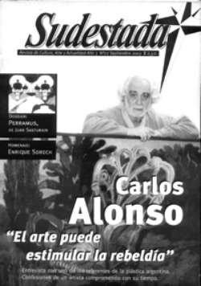

Buscar
Te creo, no te creo...
Edición N° 22
Septiembre 2003
Revista bimensual
Comprar edición impresaSumario
- Carlos Alonso: "La fantasía es que aparezca, en medio de la rutina, alguna luz"
- Te creo, no te creo...
- Acerca de la visita de Vargas Llosa a Bagdad: La mirada del gusano
- Homenaje a Enrique Sdrech: Un país escrito con sangre
- Perramus, sombras, nada más
- Tim Burton, o el precio de la autobiografía
Compartir Articulo
A decir verdad muchas veces sentimos asco. Asco al ver pasar imágenes desoladoras, conmovedoras, por los grandes noticieros y diarios de turno, con conductores que saben poner caras afligidas ante el dolor ajeno. Son los Dueños de la Verdad, sí, de la Verdad Absoluta. Claro, esos mismos dueños, quince o veinte minutos después, saben poner otra cara, la verdadera, acusando a los más desposeídos con una simpleza aterradora ¿A quién le creemos más? ¿A un papelito de un pibe entregado en un tren para ganarse unas monedas o al implacable Santo Biasatti? Generalmente la verdad queda relegada a la segunda opción que bien sabe enmascarar los fraudes políticos, la contaminación de empresas como Repsol-YPF o Shell en cualquier parte del país o los negociados de las empresas privatizadas. La prensa argentina está podrida.
El interrogante está oculto muchas veces ¿Quién escribirá la historia de los encubridores, dónde quedarán las cintas de filmaciones perversas aprovechándose de la ignorancia y la buena predisposición de la gente ante los periodistas? Para ir a ejemplos concretos: Daniel Tognetti, conductor de Punto Doc es capaz de entrar a la villa 31 y hacerse el indignado, y luego en el piso aclarar: "No toda la gente de la villa delinque". Esta prensa te "acepta", te escucha un poquito y luego se decide, mirando de lleno a la cámara. En otro de los tantos casos, un (¿cómo definirlo?) Guillermo Andino denuncia un hecho de discriminación contra dos pibes en una escuela de Barrio Norte por "villeros y ladrones". Acto seguido acusa a gente de un asentamiento en una fábrica de Flores porque aumentó el delito en la ciudad. Te creo, no te creo, ese es el juego.
Son los mismos que gozan como en un banquete de la farsa electoral, esa grotesca imitación de algo llamado democracia, o también conocida como el paraíso de la burguesía por estos países. Las caras nos exigen: hay que optar, no importa nada más. No importa si no hay alternativas, si todos (o casi) son empleados y van a cobrar en elo mismo mostrador, si la derecha se recicla y se inventa en nuevos bolsillos; si el progresismo se licúa y escupe impresentables figurones; si la izquierda (?) se suma al circo con mucho gusto y nada de ideas y apuesta todo su aparatito para ganarse un concejal. Ahí están, en la tele, nos miran y nos dicen qué hacer. Aniquilan la imaginación, son soldados de la miseria y la mediocridad, incapaces de sostener dos ideas con coherencia, pero eso sí, muy seguros para defender su democracia. Esa por la que muchos dejaron su vida y hoy, tiempo después, parece rehén de la derecha, con la gente lejos de las decisiones, lejos de la calle, lejos de los medios, lejos, muy lejos...
El camino se hace difuso, ahora. Una de las opciones es aprender y defender el compromiso de ciertos referentes en el periodismo, que dejaron su vida obedeciendo a lo más noble de sus verdades, cueste lo que cueste. Releyendo las investigaciones puntillosas y desesperadas de Rodolfo Walsh o disfrutando de los silencios y pausas de Fabián Polosecki en sus programas El otro lado y El visitante.
Será que la verdad va lentamente desapareciendo, será que nos tienen rodeados, será que el tiempo que sigue depende de romper el cerco del sentido común y apostar a comprometerse.
La opción está, creer o no creer es la cuestión, seguir reproduciendo las mentiras de los muñecos de turno o escuchar, escuchar a la gente, no sólo televisión, televisión y televisión. Leer en los ojos de las aves de rapiña y construir alternativas de conocimiento, de distintas posiciones. y buscar, buscar desde cada espacio propio, defender las ideas y los principios, aunque cueste, aunque todo se venga abajo: creer, y esta vez empezar a creer en serio, y como siempre escuchando las voces que muchos quieren que no tengan eco.
Comentarios

Sudestada
El colectivo de Revista Sudestada esta integrado por Ignacio Portela, Hugo Montero, Walter Marini, Leandro Albani, Martín Latorraca, Pablo Fernández y Repo Bandini.
Articulos más vistos


LIBRERÍA SUDESTADA

Colección infantil

Distribuidora de Libros

Suscripción

Sudestada en URUGUAY

Otros articulos de esta edición
 Dossier
Dossier
Perramus, sombras, nada más
El alma de una ciudad a punto de desaparecer. Así comienza una saga inolvidable que ilustró Alberto Breccia y escribió ...
 Homenaje
Homenaje
Homenaje a Enrique Sdrech: Un país escrito con sangre
A pocos días de su muerte, Sudestada publica la última entrevista con el periodista que marcó todo un camino en ...
 Cinestada
Cinestada
Tim Burton, o el precio de la autobiografía
Un recorrido por la delirante carrera del director que le ganó por afano a la industria del cine; o la ...
Carlos Alonso: "La fantasía es que aparezca, en medio de la rutina, alguna luz"
Referente ineludible de la plástica contemporánea, ejemplo de coherencia artística durante sus cuatro décadas de trabajo; Carlos Alonso representa por ...
Acerca de la visita de Vargas Llosa a Bagdad: La mirada del gusano
Cada vez más reaccionario y funcional a la derecha mundial, nada queda del escritor comprometido con las causas de liberación ...